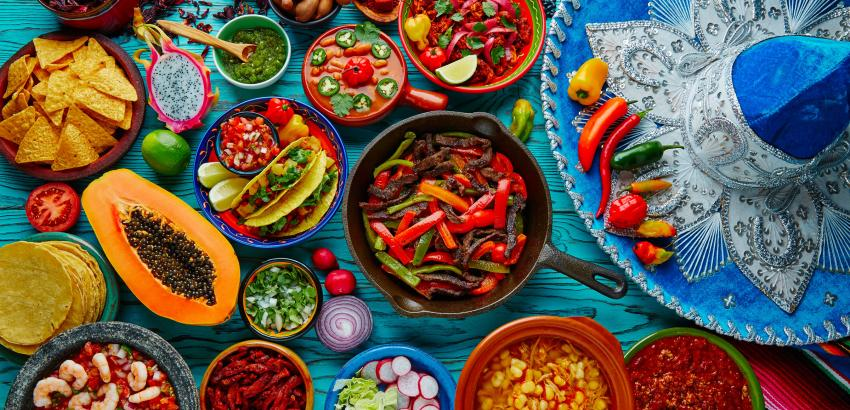

Gastronomia

La gastronomía mexicana tiene una variedad increíble de platillos recetas y sabores, y depende mucho de la región o del estado donde se preparen.
La gastronomía mexicana es el conjunto de platillos y técnicas culinarias de México que forman parte de las tradiciones y vida común de sus habitantes, enriquecida por las aportaciones de las distintas regiones del país, que deriva de la experiencia del México prehispánico con la cocina europea, entre otras. El 16 de noviembre del año 2010, la gastronomía mexicana fue reconocida como Patrimonio Cultural Inmaterial de la Humanidad por la Unesco.
La cocina mexicana ha sido influida y ha influido a su vez a cocinas de otras culturas, como la española, francesa, italiana, africana, del Oriente Medio y asiática. Es testimonio de la cultura histórica del país: muchos platillos se originaron en el México prehispánico y otros momentos importantes de su historia. Existe en ella una amplia gama de sabores, colores, olores, texturas e influencias que la convierten en un gran atractivo para nacionales y extranjeros: México es famoso por su gastronomía.
La base de la cocina mexicana actual deriva en gran parte de la cocina existente en la época prehispánica, con un uso preponderante del maíz, frijol, chile, jitomate, tomate verde, calabaza, aguacate, cacao, cacahuate, amaranto, vainilla, nopal, agave, cactáceas, hierbas y condimentos (epazote, hoja santa, pápalo, quelites), diversas aves como el guajolote y variedad de mamíferos, peces e insectos. Mientras que múltiples ingredientes se han adaptado a la cocina mexicana a través del intercambio cultural que trajo el Virreinato de Nueva España y los siglos subsecuentes, que introdujeron ingredientes europeos, mediterráneos, asiáticos y africanos como es el trigo, arroz, café, comino, hierbabuena, laurel, orégano, perejil, cerdo, res, pollo, cebolla, limón, naranja, plátano, caña de azúcar, cilantro, canela, clavo, tomillo y pimienta; muchos de los cuales han sido ampliamente adoptados e incluso históricamente cultivados en México, como es el caso del café y el arroz.
México aportó al mundo productos sin los cuales no sería posible entender la gastronomía mundial. Entre ellos el maíz, frijol, chile, aguacate, vainilla, cacao, jitomate, calabaza, chayote, zapote, mamey, papaya, guayaba, nopal y guajolote.
La diversidad es la característica esencial de la cocina mexicana, y es la comida regional uno de sus aspectos fundamentales. Cada estado mexicano y región poseen sus propias recetas y tradiciones culinarias. Ejemplos de comidas regionales son platillos como el caldillo duranguense (Durango), cochinita pibil (yucateca), el mole oaxaqueño, el mole poblano y el chile en nogada (Puebla), los múltiples tipos de pozole, el cabrito (coahuilense y neoleonense), el pan de cazón campechano, el churipo y las corundas (región purépecha) o el menudo (jalisciense, michoacano, sinaloense, sonorense y chihuahuense). Ciertamente, hay creaciones gastronómicas que surgieron localmente y que por su calidad, aceptación y difusión se han vuelto emblemáticas de la cocina mexicana en lo general. En los mercados de cada sitio se muestra esta diversidad, y la actividad por las mañanas comienza con típicos desayunos como molletes dulces o salados, chilaquiles y/o huevos al gusto y bebidas con leche, café, chocolate y jugos, hasta platillos únicos de cada región.
En el conjunto inmenso de cocinas regionales, se caracterizan todas ellas por un componente indígena básico en sus ingredientes y algunas técnicas comunes de preparación de los alimentos. El común denominador en muchas cocinas es el uso de maíz, chile y frijol, acompañados de jitomate en sus diversas formas, aunque no es un determinante
La cocina en México también cumple funciones rituales y festivas determinantes, tales como la instalación del altar de muertos o la fiesta de quince años. La comida suele representar claramente la estructura social del país.
Una de las características de la gastronomía mexicana es que aunque hace distinción entre la cocina cotidiana y la alta cocina, estos pueden consumirse en cualquier momento y ser adecuado. Así, aunque existen platillos típicos festivos como el mole o los tamales, estos pueden consumirse cualquier día del año si así se desea, lo mismo en una casa particular que en un restaurante lujoso o en una pequeña fonda sin un valor ritual especial; y a la vez darle ese valor ritual cuando se requiera.